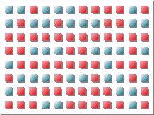
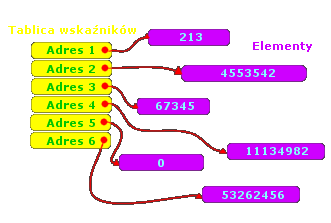

| << Poprzednia czêœæ kursu Spis Strona g³ówna Nastêpna czêœæ kursu >> |
|
int* tab_dyn = new int[600]; |
|
tab_dyn[0] = 10; //wpisujemy dziesi¹tkê tab_dyn[7] = *tab_dyn; //dziesi¹tka wêdruje dalej tab_dyn[200] = tab_dyn[7] //i jeszcze dalej |
|
int* tab = new long double[1000000]; if(tab==NULL) return 1; //brak pamiêci, wyjdŸ z programu |

Te œliczne b³êkitne kwadraciki, pouk³adane w rzêdach, oznaczaj¹ wolne miejsce (ka¿dy kwadracik to 2 bajty). Czerwone kwadraciki to bajty zajête. W poni¿szym przyk³adzie bêdziemy próbowaæ alokacji 2 elementów typu int, czyli 8 bajtów. A tu zonk - nigdzie nie ma oœmiu b³êkitnych kwadracików pod rz¹d! Ogólna liczba wolnych bajtów na rysunku wynosi a¿ 37 (jeœli siê nie mylê :-)), czyli o wiele wiêcej, ni¿ nam trzeba, ale nie le¿¹ one obok siebie, wiêc nie mo¿na z nich zrobiæ tablicy. To jest w³aœnie fragmentacja pamiêci. Oczywiœcie defragmentacja bêdzie polega³a na takim posortowaniu zawartoœci pamiêci, ¿eby bajty zajête le¿a³y obok siebie, a wolne - w innym miejscu, ale te¿ obok siebie. Ale to ju¿ zadanie systemu operacyjnego oraz odpowiednich programów do optymalizacji RAM-u. Nam jako programistom pozostaje tylko siê modliæ, aby takie sytuacje siê nie zdarza³y ;-). A oto nasza nieudana próba alokacji:|
int* tab = new int[2]; if(tab==NULL) return 1; //dalsze instrukcje |
|
int* z = new int; *z = 10; |

Takie rozwi¹zanie oprócz ewidentnej wady (jest doœæ skomplikowane) ma wiele zalet. Po pierwsze, dziêki temu mo¿emy alokowaæ ca³kiem du¿¹ tablicê nawet wtedy, gdy pamiêæ jest pofragmentowana, bowiem poszczególne jednowymiarowe tablice wchodz¹ce w sk³ad naszej tablicy dwuwymiarowej mog¹ siê znajdowaæ w zupe³nie ró¿nych miejscach w pamiêci. Po drugie, spoœród naszych sk³adowych tablic jednowymiarowych ka¿da mo¿e mieæ inny rozmiar (tak jest np. na powy¿szym rysunku).|
int* jw; for(int i=0; i<liczba_wierszy; i++) jw = new int[liczba_kolumn]; |
|
int** tab = new int*[liczba_wierszy]; for(int i=0; i<liczba_wierszy; i++) tab[i] = new int[liczba_kolumn]; |
|
#include <stdio.h> int main() { int rx,ry,**tab; printf("Podaj liczbê wierszy: "); scanf("%i", &ry); printf("Podaj liczbê kolumn: "); scanf("%i", &rx); tab = new int* [ry]; //alokacja pamiêci for(int i=0; i<ry) tab[i] = new int[rx]; for(int y=0; y<ry; y++) //wype³nianie tablicy for(int x=0; x<rx; x++) tab[y][x] = x; for(int y=0; y<ry; y++) //wypisanie zawartoœci na ekranie { for(int x=0; y<rx; x++) printf("%3i", tab[y][x]); printf("\n"); //na zakoñczenie ka¿dego wiersza } for(int i=0; i<ry; i++) //zwolnienie pamiêci delete[] tab[i]; delete[] tab; return 0; } |
| << Poprzednia czêœæ kursu Spis Strona g³ówna Nastêpna czêœæ kursu >> |